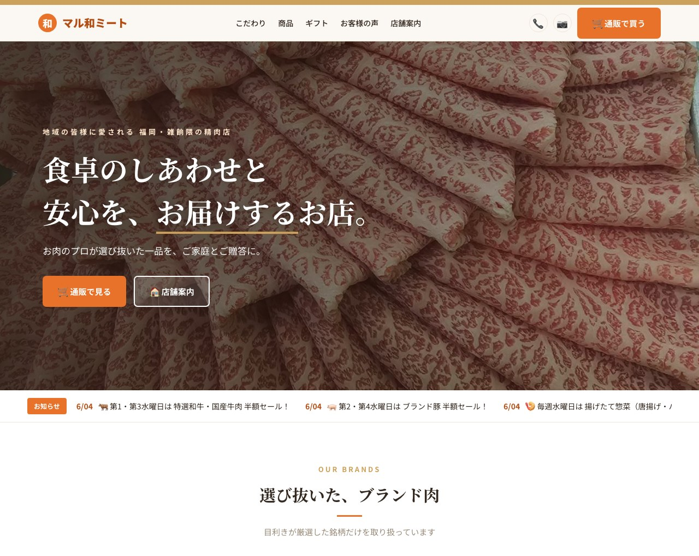

食卓のしあわせと安心をお届けするお店｜福岡・雑餉隈の精肉店

| プラン | 🌿 梅（お手軽） | 🎋 竹（おすすめ）推奨 | 🌸 松（本格） |
|---|---|---|---|
| 初期制作費（税別） | 25〜40万円 | 50〜80万円 | 100〜180万円 |
| サイト | 主要ページ | 全ページ＋更新機能 | 完全オリジナル |
| 通販 | BASE/STORES連携 | BASE/STORES＋商品登録代行 | Shopify本格構築 |
| LINE・SNS | 開設サポート | 開設＋リッチメニュー＋連動 | ＋配信設計・運用レク |
| ロゴ・撮影 | 既存活用 | 既存活用＋調整 | ロゴ整備＋撮影込 |
| 納期目安 | 3〜4週間 | 5〜8週間 | 2〜3ヶ月 |
※デザイン確定・写真提供・試作完成済みのため、通常より設計/デザイン工程を圧縮できています。
※BASE/STORES＋LINE無料なら、固定費は実質「ドメイン代＋売れた分の手数料」だけで始められます。
自社サイトで整えた商品・写真・配送体制は、そのまま他の販路にも活かせます。
一般のお客様と飲食店（卸）で、得意なサービスを使い分けます。公式サイトが「入口」です。
カード決済・冷凍クール便で個人宅へ。月0円〜で手軽に。
飲食店がスマホでログイン発注・掛け払い。FAX/電話の置き換え（導入は任意）。
初期費用・固定費を抑えてノーリスクで通販を立ち上げ → 売上が伸びたら Shopify(松) へ移行、ふるさと納税やモールへ展開。すでに試作・デザイン・写真が揃っているので、竹でも高い完成度に仕上がります。